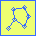

To activate model functions, read a file with the "Model/Read model" menu item or select the model tool (linked components icon). A new window will open with settings for components and links.
- Model menu:
- Read model - read a model of components and links from a file (STAR, PDB, CMM).
- Write model - write a model to a file (STAR, PDB, CMM).
- Edit model - open a primitive text editor to read and fix a model file.
- Set views - set default views derived from component locations.
- Delete all components - delete all model elements in memory (no recovery!).
- Delete non-selected components - delete components deselected by the FOM cutoff (no recovery!).
- Add or update component type - add or change a component type.
- Extract marked panels - extract panels from multi-level masks marked by components.
- Generate particles - generate particles from the component locations.
- Parameters:
- Components - number of components and the selected subset.
- Links - number of links and the selected subset.
- Distance - between the last two components selected.
- Radiobuttons to display/hide components and labels, and set the display line width.
- Select - sets the selection according to pull-down list value.
- Component radius - sets the component radius to the indicated value.
- Link radius - sets the link radius to the indicated value.
- Color - Sets the color according to the pull-down list value.
- FOM cutoff slider - selects components for display, non-selected componets can be deleted.
- Table of component types - used for selecting types.
An image with a model with different kinds of components
Mouse controls:
- Left button: create a component
- Right button: create a link from the last selected component
- Shift - left button: delete a component
- Shift - right button: delete a link
Clicking the left mouse button in an empty region on the image creates a new component. Clicking it close to a component will select that component. Only one component is selected at any time. A component can be dragged within the xy plane. To move a component up or down slices, use the "u" or "d" keys, respectively.
To jump to the selected component, use the "s" key.
Clicking the right mouse button in an empty region creates a link from the last selected component. If there is no component selected, nothing will happen. Clicking close to an existing component creates a link from the last selected component to that one.
To delete a component, hold down the shift key and click the left button on the component. All links associated with the component will also be deleted.
To delete a link, hold the shift key and click the right button close to the link.
Saving and reading models:
The model of components and links can be saved in a model file with the menu option "Model/Write model" and read back with the menu option "Model/Read model ". The formats acceptable for models are a STAR oir XML format with model tags, molecular files and Chimera model files (cmm).